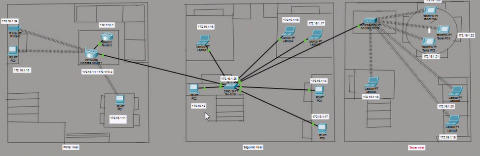
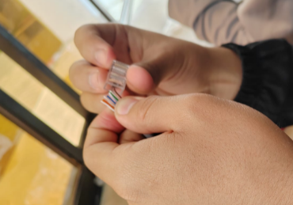
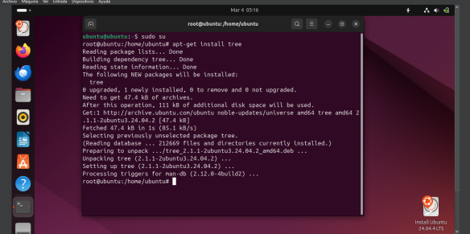

📂 Proyectos de los Cursos
Introduccion a los sistemas de computo

Creacion de planos y funcionamiento de una Red LAN en Packet Tracer

Configuración de una Red LAN para interconectar tres computadoras

Fabricación de Patchcords (Directo y Cruzado)

Implementacion de base de datos: Biblioteca, Inventario y Red Social

Mantenimientos de Computadoras

Instalación de Ubuntu